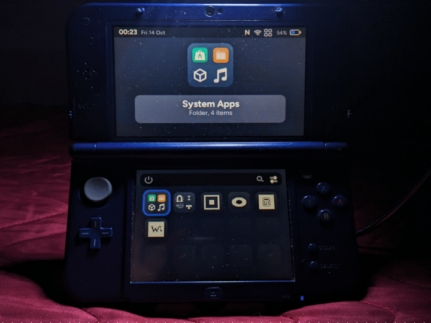

🔗 Where can I download AOS Installer?
From Universal-Updater or from aurora3ds.xyz/downloads (and follow the guide carefully on how to do it, but it's very simple)
🤔 Meaning...
• OS : Operating System
• HOS : Horizon / Horizon OS, Nintendo's main and proprietary system
• AOS : Aurora / AuroraOS, alternative and open-source system
• 3DS : An umbrella term covering from (Old) 3DS to New 2DS XL.
• KB : Kilobyte · MB : Megabyte (1024 KB = 1 MB)
• Start : 3DS button located next to Select
• Power : 3DS button to shutdown the 3DS
• aShop Apps : Non-system apps downloadable from aShop
🟢 Strengths
🟢 Foolproof installation: After downloading AOS Installer, launch it, tap Install, wait, and *bam*! To launch AOS, tap Boot or - with the 3DS turned off - hold down Start + press Power, select Aurora using the D-pad and confirm with A Button, and finally tap Boot! Just a few simple, easy-to-remember steps
🟢 Unlike HOS, AOS is extremely lightweight in terms of resources and lightning-fast by 3DS hardware standards. The total size of AOS and the apps (many of which are in KB in size) is a mere handful of MB (my ideal for modern software)
🟢 AOS acts as an alternative OS alongside HOS: it does not overwrite anything; instead, it creates a dedicated folder named Aurora in the root of the microSD card, containing the subfolders and files necessary for proper operation
🟢 There is a website where you can customize your account (currently limited to managing active sessions), download aShop Apps (somewhat inconvenient on AOS without an FTP client), and create an app (which must then be approved by the staff before it can be published on aShop)
🟢 X Button: Opens the Unix-like terminal; it even remains running in the background (albeit briefly) after you exit it. Everything works as it should. It is worth reiterating that AOS is not GNU/Linux or BSD, but an independent OS
🟢 Y button (from the home screen): Opens a window where you can create a folder to group multiple apps together for better space management; you can also rename the folder as you wish. Folders can also be created by dragging one app onto another
🟢 L & R Combo Buttons: Capture the screen (screenshot)
🟢 Thanks to C SDK support, apps can be developed in this programming language, with a dedicated folder for apps written and optimized in C
🟢 Overall, aShop is well-structured and makes good use of hierarchies; it is easy to understand how to browse for apps within specific categories (each with its own color) and how to download or update them. Each app listing includes a description, a changelog, and the stated file size. You can also mass-update multiple apps, rather than having to do them one by one
🟢 Wi-Fi connection or a registered account to set up and use AOS are optional, so it can be used entirely offline. Of course, you will still need Wi-Fi to use aShop for install or update apps
🟢 From the file manager: When you open a file with an unsupported format, it allows you to open it in order to read and modify it using a hex editor. For ordinary mortals, this is useless
🟢 aShop is accessible and usable offline: This makes it logical to have a category for news serving as reminders about AOS and aShop updates. The only online component is used to update the database
🔴 Flaws
🔴 Sleep Mode fails to activate when the 3DS is left idle or closed: The screen brightness doesn't even dim slightly
🔴 The brightness adjustment option has no effect: There is no option to enable warm colors (to reduce eye strain in low-light environments)
🔴 System & aShop Apps can be counted on the fingers of two hands (10): Understandable for an OS that was recently launched and hasn’t yet gained much traction through word-of-mouth
🔴 Apart from Music and Calculator< there are still no essential apps such as a text editor (that is not limited to read-only access), FTP client, alarm clock, calendar, gallery, paint program, camera, QR code reader, browser, video player, etc.
🔴 You cannot leave the aShop process running while downloading an app: You have to stay glued there until it finishes (or else cancel the operation)
🔴 There's no option to uninstall an aShop App: It's not even on the home screen or in the system settings. The only way is to go into the file manager and manually delete them
🔴 The option to change and/or customize the visual theme is missing: There is no dedicated app for creating and saving your own visual theme configuration.
🔴 The only games available on aShop: Snake, Tetris, Pong, a Text-based Idle Game, a Quiz Game, and a Dungeon Crawler. There isn't a game yet that takes advantage of the 3D capabilities
🔴 Based on my tests, the screen capture function cannot be used within aShop Apps, and it doesn't warn you beforehand that it is about to capture the screen, only notifying you once it has finished, after a few seconds
🔴 There is no option to remap keys / shortcuts
🔴 The power-off icon only turns off the 3DS and offers no other options, such as restarting or sleep mode. The window does not appear when pressing the physical power button, so the action must be performed via the software
🔴 To update AOS, you need to go through HOS and launch "AOS Installer," whereas in aShop, you can only update aShop itself and aShop Apps
🔴 You can't do much with the terminal: It doesn't seem possible to install packages to run text-based applications, leaving potential to be realized in future versions
🔴 Lacks a notific bar panel accessible via a dedicated button or touchscreen, which would have made having Wi-Fi and Bluetooth toggles more useful. There is also no notific list, such as one showing which apps were downloaded from aShop
🔴 The audio is completely disabled - likely by design (for now) - so that in future versions, frequencies and decibel levels can be properly optimized without blowing out speakers or damaging our ears when using headphones
🔴 Due to some unspecified limitation, aShop Apps have single-color icons and exhibit pixelated edges lacking anti-aliasing
🔴 The file manager is very limited: It lacks a built-in (S)FTP client; you cannot mark files or folders as favorites; you cannot select a specific folder to create a home screen shortcut for direct access; and you cannot compress or decompress files or folders
🔴 The hex editor: It cannot be opened if you attempt to open a file that is supported by AOS; instead of offering a choice of how to open that file
🔴 The "Music" system app: In addition to not recognizing audio formats such as .mid, .mp3, .m4a and .opus, it only recognizes .aaf (the native AOS format), so you must use the Python script to convert files to that format
🔴 Still regarding the "Music" app: Even when trying song.aaf as a test file (and note that this file isn't included in AOS and must be added separately), either the AOS audio is completely disabled, or the audio file seems stuck in an endless loading loop, judging by the fact that no sound comes out of the speakers. Furthermore, it only reads audio files from its own specific folder and is extremely limited in terms of functionality, leaving plenty of room for future improvement
🟣 Fixed flaws
🟣 Downloading an app from aShop takes ages: in my case, 4–8 KB every 4–6 sec., even though my Wi-Fi is capable of better speeds; AOS really needs some optimization about the 3DS's network card
👾 Bugs found
👾 Easily replicable and harmless: In System Settings, if you abruptly cancel out of the Wi-Fi search screen by pressing B button twice, AOS will experience slowdowns, momentary freezes, lag, a lower frame rate, and graphical flickering when navigating between options, and transition animations will be disabled. I opened a random app (Pong), and the bug *poof* vanished. Never select "Power Off" icon, or AOS will freeze completely, forcing you to either manually shut down the 3DS or wait at least 30 seconds for it to shut down on its own
❤️ And to conclude...
Mini-review written, conceived and edited by me from 10 Oct 2026 to 13 Oct. 2026, after testing AOS from Beta 5 (v0.1.4) to Beta 6 (v0.1.5)

[ Italiano ]